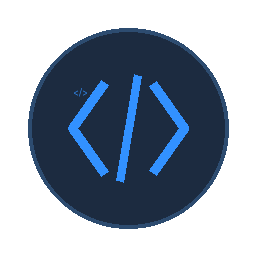
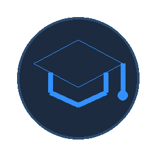
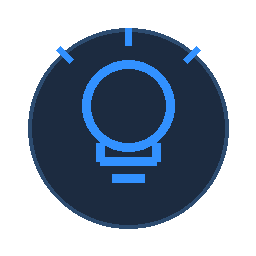

À propos de moi
Bonjour, je suis Ayoub Kourdini
Je suis développeur web passionné par la création de sites web simples, modernes et utiles. J’aime apprendre de nouvelles technologies et transformer mes idées en projets concrets.
Ce que j'aime faire
-

Développement web HTML, CSS, JavaScript
-

Toujours apprendre De nouvelles compétences, de nouveaux objectifs
-

Résolution de problèmes Trouver des solutions simples et efficaces